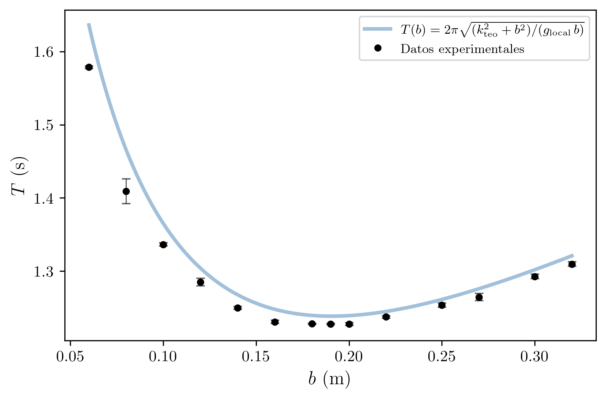
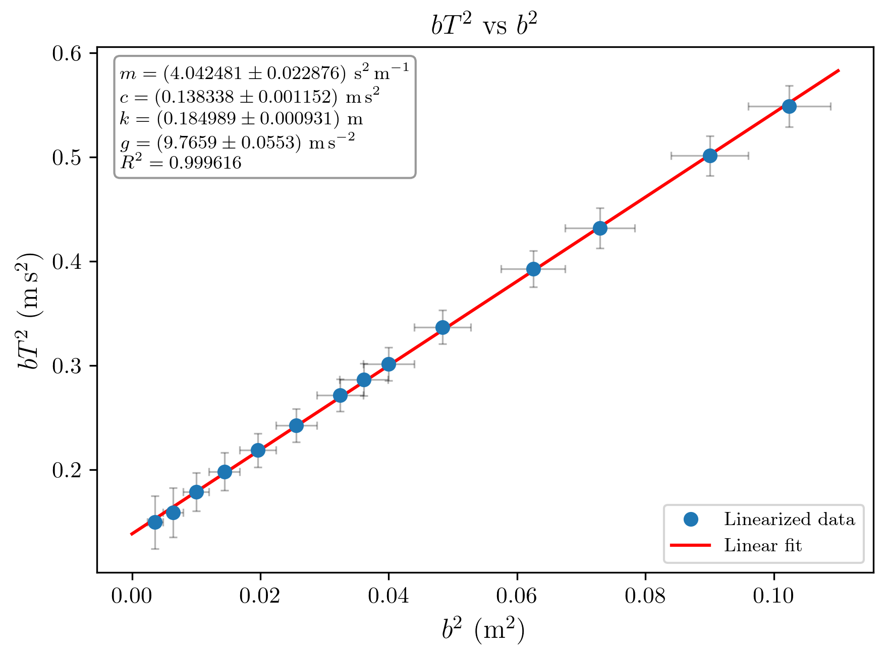
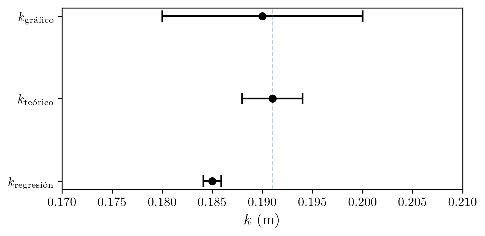
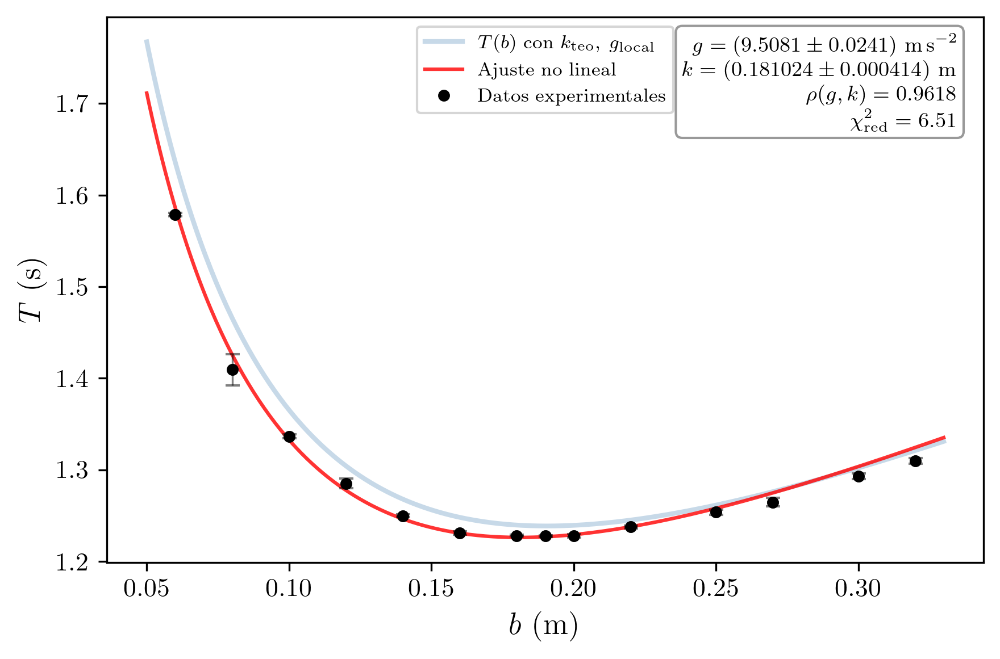
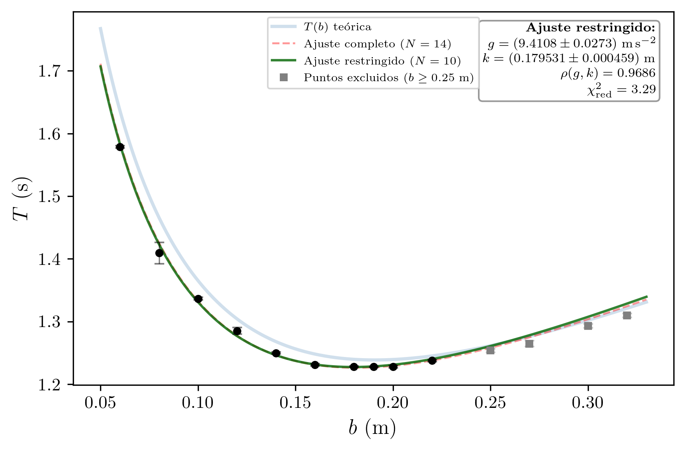
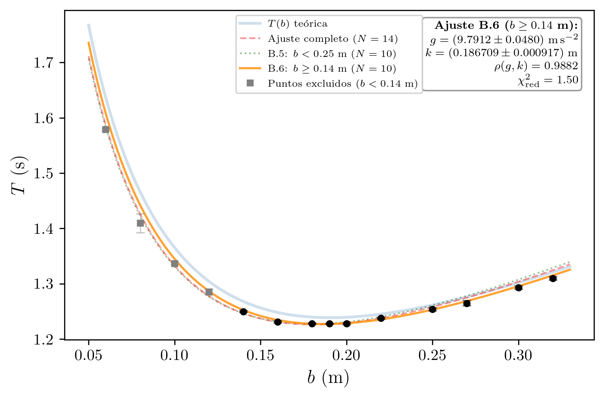
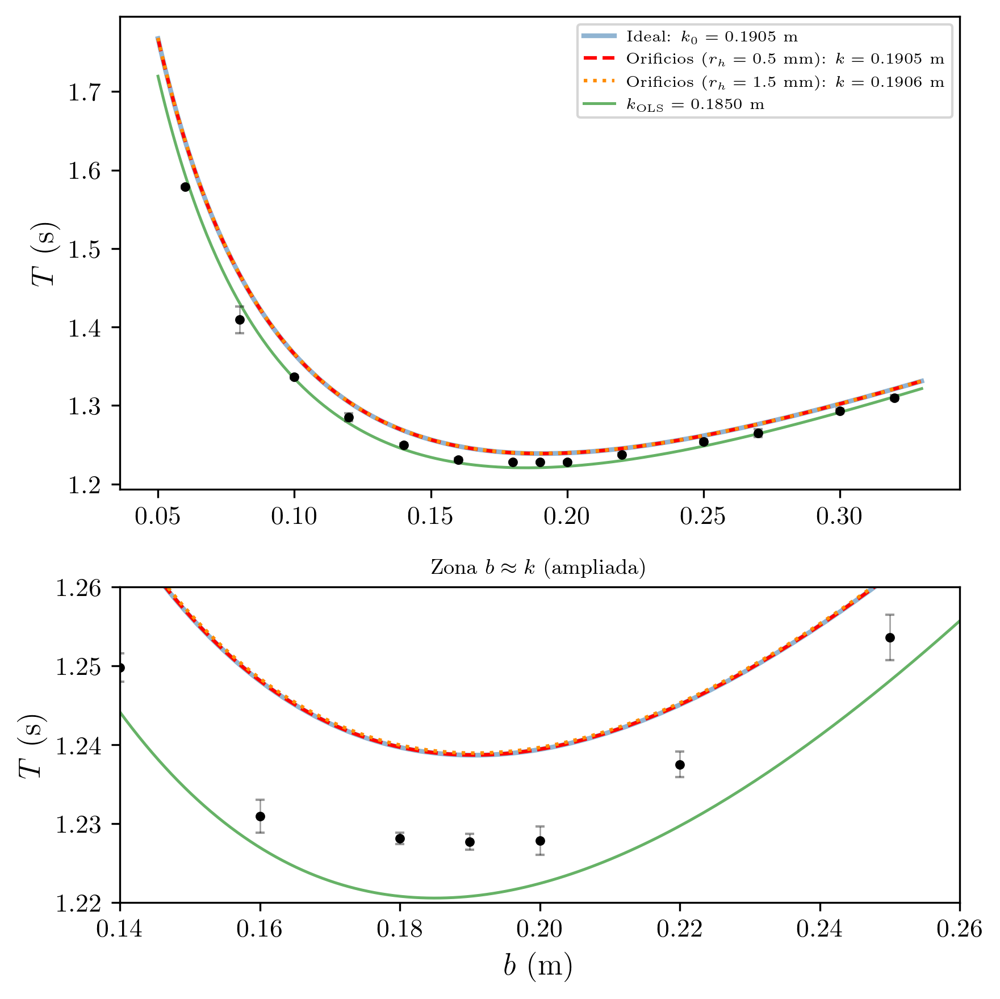

Práctica 1 — Técnicas Experimentales I
2026-03-07
Se determina experimentalmente la aceleración de la gravedad g y el radio de giro k de una barra metálica a partir de medidas del periodo de oscilación T en función de la distancia b del punto de suspensión al centro de masas. Mediante regresión lineal de bT² frente a b², se obtiene g = (9.77 ± 0.06) m/s² y k = (0.1850 ± 0.0009) m, ambos compatibles con los valores teóricos.
| Asignatura | Técnicas Experimentales I (Cod. 61041080) |
| Práctica | Práctica 1: Péndulo Físico |
| Alumna | Maria López Fernández |
| DNI | 12345678A |
| Correo electrónico | mlopezfernandez42@ejemplo.uned.es |
| Teléfono | 612 345 678 |
| Centro Asociado | Madrid - Gregorio Marañón |
| Tutor | Dr. Fernando García Martínez |
| Fecha de realización | 27 de febrero de 2026 |
| Fecha de entrega | 7 de marzo de 2026 |
El objetivo de esta práctica es la determinación experimental de la aceleración de la gravedad g y del radio de giro k de una varilla metálica mediante el estudio de sus oscilaciones como péndulo físico.
Un péndulo físico es cualquier cuerpo rígido que oscila libremente alrededor de un eje horizontal que no pasa por su centro de masas. A diferencia del péndulo simple (masa puntual suspendida de un hilo sin masa), el péndulo físico tiene una distribución de masa real y su movimiento depende del momento de inercia del cuerpo respecto al eje de oscilación. El estudio de la dependencia del periodo de oscilación con la posición del punto de suspensión permite obtener información sobre las propiedades inerciales del cuerpo y sobre la aceleración gravitatoria local.
Para extraer los valores de g y k, se linealiza la expresión del periodo del péndulo físico y se aplica un ajuste por mínimos cuadrados a los datos experimentales. La comparación de los resultados con los valores teóricos y tabulados permite evaluar la calidad de las medidas realizadas.
Un cuerpo rígido de masa M que puede girar libremente alrededor de un eje horizontal fijo constituye un péndulo físico. Sea b la distancia entre el eje de giro y el centro de masas del cuerpo, e I_0 su momento de inercia respecto al eje de giro. Para oscilaciones de pequeña amplitud, la ecuación del movimiento conduce a un movimiento armónico simple con periodo:
T = 2\pi\sqrt{\frac{I_0}{Mgb}}
Aplicando el teorema de Steiner (ejes paralelos), el momento de inercia respecto al eje de giro se relaciona con el momento respecto al centro de masas:
I_0 = I_{CM} + Mb^2 = Mk^2 + Mb^2 = M(k^2 + b^2)
donde k es el radio de giro respecto al centro de masas, definido por I_{CM} = Mk^2. Sustituyendo:
T = 2\pi\sqrt{\frac{k^2 + b^2}{gb}}
Para una varilla delgada y homogénea de longitud L, el momento de inercia respecto a su centro es I_{CM} = \frac{1}{12}ML^2, de modo que:
k = \frac{L}{2\sqrt{3}}
Linealización. Elevando al cuadrado la expresión del periodo y multiplicando ambos miembros por b:
bT^2 = \frac{4\pi^2 k^2}{g} + \frac{4\pi^2}{g}b^2
Esta ecuación tiene la forma y = n + mx, con y = bT^2 y x = b^2. Los coeficientes del ajuste lineal proporcionan:
\text{Pendiente:}\quad m = \frac{4\pi^2}{g} \quad\Longrightarrow\quad g = \frac{4\pi^2}{m}
\text{Ordenada:}\quad n = \frac{4\pi^2 k^2}{g} \quad\Longrightarrow\quad k = \sqrt{\frac{n \cdot g}{4\pi^2}}
El dispositivo consiste en una varilla metálica delgada y homogénea de longitud L = 0.66 m, que se suspende horizontalmente mediante un eje (clavo o cuchilla) que atraviesa una serie de orificios practicados a lo largo de la varilla a distintas distancias b de su centro de masas. La varilla, al ser desplazada ligeramente de su posición de equilibrio, oscila como un péndulo físico.
El centro de masas de la varilla se localiza en su punto medio geométrico (a L/2 = 0.33 m de cada extremo). Los orificios estan dispuestos a diferentes distancias b del centro, desde b = 0.06 m hasta b = 0.32 m.
Para cada posición del eje, se mide el tiempo correspondiente a 20 oscilaciones completas, repitiendo la medida 5 veces. De esta forma se reduce la incertidumbre estadística y se detectan posibles errores de medida.
| Instrumento | Magnitud medida | Precisión |
|---|---|---|
| Regla graduada | Distancia b al centro de masas | \Delta b = 0.01 m (1 cm) |
| Cronómetro digital | Tiempo de 20 oscilaciones (20T) | \Delta t = 0.01 s (centesimal) |
Estado de calibración y trazabilidad (B2, B3): La regla graduada y el cronómetro digital son instrumentos de uso general de laboratorio, sin certificado de calibración individual. Se asume que sus indicaciones son trazables a patrones nacionales a través del fabricante y que no presentan errores sistemáticos significativos más allá de su resolución. La ausencia de calibración certificada constituye una fuente potencial de error sistemático que se tiene en cuenta cualitativamente en la discusión de resultados.
Condiciones ambientales (A2): Las medidas se realizaron a temperatura ambiente de aproximadamente 20 \pm 2 °C y humedad relativa del 50 \pm 10%. El laboratorio se encuentra aislado de vibraciones mecánicas significativas. No se observaron corrientes de aire apreciables durante las mediciones. Estas condiciones se consideran estables y no introducen variaciones significativas en el periodo de oscilación.
Eje de giro (clavo/cuchilla)
|
v
========================================== <-- Varilla metalica (L = 0.66 m)
| ^ |
| | b (distancia al CM) |
| | |
| * CM (centro de masas) |
| |
==========================================
|
v (oscilacion en el plano vertical)Se realizaron 14 series de medidas, variando la posición del eje de giro (distancia b al centro de masas). Para cada posición se midió 5 veces el tiempo de 20 oscilaciones completas.
Tabla 1. Datos brutos: tiempo de 20 oscilaciones (20T) en segundos.
| Medida | b (m) | 20T_1 (s) | 20T_2 (s) | 20T_3 (s) | 20T_4 (s) | 20T_5 (s) |
|---|---|---|---|---|---|---|
| 1 | 0.06 | 31.63 | 31.63 | 31.47 | 31.53 | 31.59 |
| 2 | 0.08 | 27.01 | 28.53 | 28.47 | 28.47 | 28.44 |
| 3 | 0.10 | 26.85 | 26.66 | 26.69 | 26.72 | 26.72 |
| 4 | 0.12 | 25.91 | 25.62 | 25.57 | 25.94 | 25.47 |
| 5 | 0.14 | 25.00 | 24.91 | 25.07 | 25.00 | 25.00 |
| 6 | 0.16 | 24.69 | 24.66 | 24.50 | 24.68 | 24.56 |
| 7 | 0.18 | 24.53 | 24.59 | 24.54 | 24.59 | 24.56 |
| 8 | 0.19 | 24.50 | 24.59 | 24.56 | 24.53 | 24.59 |
| 9 | 0.20 | 24.60 | 24.46 | 24.62 | 24.53 | 24.57 |
| 10 | 0.22 | 24.81 | 24.68 | 24.72 | 24.82 | 24.72 |
| 11 | 0.25 | 25.03 | 25.03 | 25.16 | 25.20 | 24.94 |
| 12 | 0.27 | 25.38 | 25.47 | 25.31 | 25.28 | 25.03 |
| 13 | 0.30 | 25.79 | 25.91 | 26.00 | 25.87 | 25.72 |
| 14 | 0.32 | 26.25 | 26.00 | 26.19 | 26.29 | 26.25 |
Nota: En la medida 2 (b = 0.08 m), el primer valor (20T_1 = 27.01 s) difiere notablemente del resto de medidas del mismo punto. Esto podría deberse a un error al accionar el cronómetro o a que la varilla no oscilaba con amplitud suficientemente pequeña. No obstante, se conserva el dato y su efecto queda reflejado en la mayor incertidumbre asociada a esa medida.
Errores aleatorios: La principal fuente de error aleatorio es la variabilidad en el accionamiento del cronómetro (tiempo de reacción del experimentador), que produce una dispersión observable en las cinco repeticiones de cada medida. Esta variabilidad se cuantifica mediante la evaluación Tipo A (estadística) de la incertidumbre.
Errores sistemáticos: Se identifican las siguientes fuentes potenciales de error sistemático:
Regla de error aplicada: Se han realizado N = 5 repeticiones por cada punto de medida. Dado que 1 < N \leq 10, la incertidumbre de cada medida individual se calcula como:
\varepsilon_{20T} = \max(\varepsilon_p,\; D_m)
donde: - \varepsilon_p = 0.01 s es la precisión del cronómetro (error instrumental). - D_m = \frac{\max(20T_i) - \min(20T_i)}{2} es la semidispersión máxima.
A continuación se obtiene el periodo de una oscilación y su incertidumbre:
T = \frac{\overline{20T}}{20}, \qquad \varepsilon_T = \frac{\varepsilon_{20T}}{20}
Finalmente, la incertidumbre del valor medio (con N = 5 repeticiones) es:
\varepsilon_{\bar{T}} = \frac{\varepsilon_T}{\sqrt{N}} = \frac{\varepsilon_T}{\sqrt{5}}
Ejemplo detallado (Medida 1, b = 0.06 m):
\overline{20T} = \frac{31.63 + 31.63 + 31.47 + 31.53 + 31.59}{5} = \frac{157.85}{5} = 31.570 \text{ s}
D_m = \frac{31.63 - 31.47}{2} = \frac{0.16}{2} = 0.080 \text{ s}
\varepsilon_{20T} = \max(0.01,\; 0.080) = 0.080 \text{ s}
T = \frac{31.570}{20} = 1.5785 \text{ s}, \qquad \varepsilon_T = \frac{0.080}{20} = 0.0040 \text{ s}
\varepsilon_{\bar{T}} = \frac{0.0040}{\sqrt{5}} = 0.0018 \text{ s}
\boxed{T_1 = (1.5785 \pm 0.0018) \text{ s}}
Grados de libertad (F4): Para la evaluación Tipo A con N = 5 repeticiones, los grados de libertad son \nu_A = N - 1 = 4.
Combinación de incertidumbres Tipo A y Tipo B por RSS (H8):
La incertidumbre Tipo A del periodo medio proviene de la dispersión estadística de las medidas. Adicionalmente, existe una incertidumbre Tipo B asociada a la resolución del cronómetro digital. Para el cronómetro digital con resolución de 0.01 s, asumiendo distribución rectangular:
u_B(20T) = \frac{0.005}{\sqrt{3}} = 0.0029 \text{ s} \quad \Longrightarrow \quad u_B(T) = \frac{0.0029}{20} = 0.000144 \text{ s}
La incertidumbre combinada del periodo se obtiene sumando en cuadratura (RSS) las contribuciones Tipo A y Tipo B:
u_c(\bar{T}) = \sqrt{u_A^2(\bar{T}) + u_B^2(T)}
Para la medida 1: u_c(\bar{T}_1) = \sqrt{(0.0018)^2 + (0.000144)^2} = \sqrt{3.24 \times 10^{-6} + 2.07 \times 10^{-8}} = 0.0018 s. En este caso (y en todos los demás), la contribución de Tipo B del cronómetro es despreciable frente a la dispersión estadística (Tipo A), por lo que la incertidumbre combinada es prácticamente igual a la Tipo A.
Tabla 2. Resumen de resultados: valores medios, periodos e incertidumbres.
| Med. | b (m) | \overline{20T} (s) | D_m (s) | \varepsilon_{20T} (s) | T (s) | \varepsilon_T (s) | \varepsilon_{\bar{T}} (s) |
|---|---|---|---|---|---|---|---|
| 1 | 0.06 | 31.570 | 0.080 | 0.080 | 1.5785 | 0.0040 | 0.0018 |
| 2 | 0.08 | 28.184 | 0.760 | 0.760 | 1.4092 | 0.0380 | 0.0170 |
| 3 | 0.10 | 26.728 | 0.095 | 0.095 | 1.3364 | 0.0048 | 0.0021 |
| 4 | 0.12 | 25.702 | 0.235 | 0.235 | 1.2851 | 0.0118 | 0.0053 |
| 5 | 0.14 | 24.996 | 0.080 | 0.080 | 1.2498 | 0.0040 | 0.0018 |
| 6 | 0.16 | 24.618 | 0.095 | 0.095 | 1.2309 | 0.0048 | 0.0021 |
| 7 | 0.18 | 24.562 | 0.030 | 0.030 | 1.2281 | 0.0015 | 0.0007 |
| 8 | 0.19 | 24.554 | 0.045 | 0.045 | 1.2277 | 0.0022 | 0.0010 |
| 9 | 0.20 | 24.556 | 0.080 | 0.080 | 1.2278 | 0.0040 | 0.0018 |
| 10 | 0.22 | 24.750 | 0.070 | 0.070 | 1.2375 | 0.0035 | 0.0016 |
| 11 | 0.25 | 25.072 | 0.130 | 0.130 | 1.2536 | 0.0065 | 0.0029 |
| 12 | 0.27 | 25.294 | 0.220 | 0.220 | 1.2647 | 0.0110 | 0.0049 |
| 13 | 0.30 | 25.858 | 0.140 | 0.140 | 1.2929 | 0.0070 | 0.0031 |
| 14 | 0.32 | 26.196 | 0.145 | 0.145 | 1.3098 | 0.0072 | 0.0032 |
Los resultados del periodo con sus incertidumbres, expresados correctamente, son:
| Medida | Resultado |
|---|---|
| 1 | T = (1.5785 \pm 0.0018) s |
| 2 | T = (1.409 \pm 0.017) s |
| 3 | T = (1.336 \pm 0.002) s |
| 4 | T = (1.285 \pm 0.005) s |
| 5 | T = (1.2498 \pm 0.0018) s |
| 6 | T = (1.231 \pm 0.002) s |
| 7 | T = (1.2281 \pm 0.0007) s |
| 8 | T = (1.2277 \pm 0.0010) s |
| 9 | T = (1.2278 \pm 0.0018) s |
| 10 | T = (1.2375 \pm 0.0016) s |
| 11 | T = (1.254 \pm 0.003) s |
| 12 | T = (1.265 \pm 0.005) s |
| 13 | T = (1.293 \pm 0.003) s |
| 14 | T = (1.310 \pm 0.003) s |
Se representa el periodo T en el eje de ordenadas frente a la distancia b en el eje de abscisas. Cada punto experimental lleva barras de error verticales correspondientes a \varepsilon_{\bar{T}}.

Ejes: Eje horizontal: b (m). Eje vertical: T (s). Barras de error verticales en cada punto.
Observaciones: - La curva presenta una forma en U asimétrica, como predice la teoria del péndulo físico. - El periodo es grande para valores pequeños de b (eje de giro cerca del centro de masas, inercia dominada por k^2/b) y también crece para valores grandes de b (inercia dominada por b). - El mínimo del periodo se observa en la región b \approx 0.18 - 0.20 m, correspondiente a los puntos 7, 8 y 9, donde T \approx 1.228 s. - De la gráfica se lee un valor aproximado del radio de giro:
\boxed{k_{\text{gráfico}} \approx 0.19 \text{ m}}
Desviación sistemática. Se observa que los puntos experimentales quedan sistemáticamente por debajo de la curva analítica T(b) trazada con k_{\text{teo}} = 0.1905 m y g_{\text{local}} = 9.8047 m/s^2. Esta desviación tiene una explicación física clara: el valor teórico de k supone una varilla perfectamente homogénea y sin orificios, mientras que la varilla real posee una serie de agujeros a lo largo de su longitud que reducen el momento de inercia respecto al centro de masas. En consecuencia, el radio de giro efectivo de la varilla real es menor que el teórico (k_{\text{reg}} = 0.185 m < k_{\text{teo}} = 0.191 m), lo que se traduce en periodos menores para la mayoría de las posiciones b.
Esta desviación no puede corregirse desde el lado experimental sin modificar la varilla. Se trata de un error sistemático inherente al diseño del dispositivo: la presencia de los orificios es necesaria para poder variar el punto de suspensión, pero altera inevitablemente la distribución de masa respecto al modelo ideal. La regresión lineal, al ajustar simultáneamente g y k a partir de los datos, absorbe correctamente este efecto, proporcionando un valor de k_{\text{reg}} que refleja la geometría real de la varilla.
Para una varilla delgada y homogénea de longitud L = 0.66 m:
k_{\text{teorico}} = \frac{L}{2\sqrt{3}} = \frac{0.66}{2 \times 1.7321} = \frac{0.66}{3.4641} = 0.1905 \text{ m}
El valor gráfico (k_{\text{grafico}} \approx 0.19 m) concuerda razonablemente con el valor teórico (k_{\text{teorico}} = 0.1905 m).
Para la regresión lineal, se definen las variables transformadas:
x = b^2, \qquad y = bT^2
Propagación de errores de las variables transformadas:
Para x = b^2:
\Delta x = \Delta(b^2) = 2b \cdot \Delta b
con \Delta b = 0.01 m.
Para y = bT^2, aplicando derivadas parciales:
\Delta y = \Delta(bT^2) = \left|\frac{\partial(bT^2)}{\partial b}\right| \Delta b + \left|\frac{\partial(bT^2)}{\partial T}\right| \Delta T = T^2 \cdot \Delta b + 2bT \cdot \Delta \bar{T}
Tabla 3. Datos linealizados y sus incertidumbres.
| Med. | b (m) | T (s) | x = b^2 (m^2) | y = bT^2 (m\cdots^2) | \Delta x (m^2) | \Delta y (m\cdots^2) |
|---|---|---|---|---|---|---|
| 1 | 0.06 | 1.5785 | 0.0036 | 0.1495 | 0.0012 | 0.0253 |
| 2 | 0.08 | 1.4092 | 0.0064 | 0.1589 | 0.0016 | 0.0237 |
| 3 | 0.10 | 1.3364 | 0.0100 | 0.1786 | 0.0020 | 0.0184 |
| 4 | 0.12 | 1.2851 | 0.0144 | 0.1982 | 0.0024 | 0.0181 |
| 5 | 0.14 | 1.2498 | 0.0196 | 0.2187 | 0.0028 | 0.0162 |
| 6 | 0.16 | 1.2309 | 0.0256 | 0.2424 | 0.0032 | 0.0160 |
| 7 | 0.18 | 1.2281 | 0.0324 | 0.2715 | 0.0036 | 0.0154 |
| 8 | 0.19 | 1.2277 | 0.0361 | 0.2864 | 0.0038 | 0.0155 |
| 9 | 0.20 | 1.2278 | 0.0400 | 0.3015 | 0.0040 | 0.0160 |
| 10 | 0.22 | 1.2375 | 0.0484 | 0.3369 | 0.0044 | 0.0162 |
| 11 | 0.25 | 1.2536 | 0.0625 | 0.3929 | 0.0050 | 0.0175 |
| 12 | 0.27 | 1.2647 | 0.0729 | 0.4319 | 0.0054 | 0.0194 |
| 13 | 0.30 | 1.2929 | 0.0900 | 0.5015 | 0.0060 | 0.0191 |
| 14 | 0.32 | 1.3098 | 0.1024 | 0.5490 | 0.0064 | 0.0199 |
Se representa y = bT^2 en el eje de ordenadas frente a x = b^2 en el eje de abscisas. Cada punto lleva barras de error verticales (\Delta y) y horizontales (\Delta x). Se traza la recta de regresión ajustada por mínimos cuadrados.

Ejes: Eje horizontal: b^2 (m^2). Eje vertical: bT^2 (m\cdots^2). Barras de error en ambos ejes. Recta de regresión superpuesta.
Observación: Los puntos se ajustan de forma excelente a una recta, lo que confirma la validez de la linealización.
Se ajusta el modelo y = mx + n (es decir, bT^2 = m \cdot b^2 + n) a los N_p = 14 puntos experimentales. El detalle completo de las sumas intermedias y el cálculo paso a paso se recoge en el Apendice A.
Resumen del ajuste lineal:
| Parámetro | Valor |
|---|---|
| m (pendiente) | (4.042 \pm 0.023) |
| n (ordenada) | (0.1383 \pm 0.0012) |
| r (correlación) | 0.99981 |
| r^2 | 0.99961 |
Grados de libertad del ajuste (I4): La varianza residual se calcula con \nu_{\text{fit}} = N_p - p = 14 - 2 = 12 grados de libertad, donde p = 2 es el número de parámetros ajustados (pendiente y ordenada).
Análisis de residuos (L2): Los residuos e_i = y_i - m x_i - n del ajuste por mínimos cuadrados se examinan para detectar posibles tendencias sistemáticas. La suma de cuadrados de los residuos es \sum e_i^2 = 8.04 \times 10^{-5} m^2\cdots^4, lo que da un residuo rms de \sqrt{S^2} = 0.0026 m\cdots^2. La inspección visual de los residuos no revela tendencias sistemáticas (derivas, oscilaciones o patrones curvos), lo que confirma la adecuación del modelo lineal. Los residuos se distribuyen aleatoriamente a ambos lados de la recta de ajuste, sin evidencia de no-linealidad.
El valor de r es extremadamente próximo a 1, lo que indica una correlación lineal prácticamente perfecta y confirma la validez de la linealización.
De la pendiente del ajuste:
g = \frac{4\pi^2}{m}
g = \frac{4\pi^2}{4.0423} = \frac{39.478}{4.0423} = 9.766 \text{ m/s}^2
Propagación de la incertidumbre:
\Delta g = \frac{4\pi^2}{m^2} \cdot \sigma_m = \frac{39.478}{(4.0423)^2} \times 0.0229 = \frac{39.478}{16.340} \times 0.0229 = 0.055 \text{ m/s}^2
Redondeando el error a 1 cifra significativa:
\boxed{g_{\text{exp}} = (9.77 \pm 0.06) \text{ m/s}^2}
Error relativo:
\delta g = \frac{\Delta g}{g_{\text{exp}}} \times 100 = \frac{0.06}{9.77} \times 100 = 0.6\%
De la ordenada en el origen del ajuste:
k^2 = \frac{n \cdot g}{4\pi^2} = \frac{0.13833 \times 9.766}{4\pi^2} = \frac{1.3509}{39.478} = 0.03422 \text{ m}^2
k = \sqrt{0.03422} = 0.1850 \text{ m}
Propagación de la incertidumbre de k. Sea k^2 = \frac{ng}{4\pi^2}. La incertidumbre de k^2 es:
\Delta(k^2) = \sqrt{\left(\frac{g}{4\pi^2}\right)^2 \sigma_n^2 + \left(\frac{n}{4\pi^2}\right)^2 (\Delta g)^2}
\Delta(k^2) = \sqrt{\left(\frac{9.766}{39.478}\right)^2 (0.00115)^2 + \left(\frac{0.13833}{39.478}\right)^2 (0.055)^2}
\Delta(k^2) = \sqrt{(0.2474)^2 (0.00115)^2 + (0.003504)^2 (0.055)^2}
\Delta(k^2) = \sqrt{(2.845 \times 10^{-4})^2 + (1.927 \times 10^{-4})^2} = \sqrt{8.09 \times 10^{-8} + 3.71 \times 10^{-8}}
\Delta(k^2) = \sqrt{1.181 \times 10^{-7}} = 3.44 \times 10^{-4} \text{ m}^2
Entonces:
\Delta k = \frac{\Delta(k^2)}{2k} = \frac{3.44 \times 10^{-4}}{2 \times 0.1850} = 0.0009 \text{ m}
Redondeando:
\boxed{k_{\text{reg}} = (0.1850 \pm 0.0009) \text{ m}}
Error relativo:
\delta k = \frac{0.0009}{0.1850} \times 100 = 0.5\%
Incertidumbre del valor teórico. El radio de giro teórico depende de la longitud medida de la varilla: k_{\text{teo}} = L/(2\sqrt{3}). Propagando la incertidumbre de la regla (\Delta L = 0.01 m):
\Delta k_{\text{teo}} = \frac{\Delta L}{2\sqrt{3}} = \frac{0.01}{3.464} = 0.003 \text{ m}
\boxed{k_{\text{teo}} = (0.191 \pm 0.003) \text{ m}}
Incertidumbre del valor gráfico. De la Figura 1 se observa que el mínimo de T(b) se situa en la región b \approx 0.18 - 0.20 m (puntos 7, 8 y 9 presentan periodos prácticamente idénticos). Estimando visualmente la posición del mínimo de la curva analítica superpuesta, y considerando la dispersión de los puntos en torno al mínimo, se asigna una incertidumbre de \pm 0.01 m:
\boxed{k_{\text{graf}} = (0.19 \pm 0.01) \text{ m}}
Tabla comparativa:
| Método | k (m) | \Delta k (m) | Error relativo |
|---|---|---|---|
| Gráfico (mínimo de T vs b) | 0.19 | 0.01 | 5% |
| Teórico (L/2\sqrt{3}) | 0.191 | 0.003 | 1.5% |
| Regresión lineal | 0.1850 | 0.0009 | 0.5% |

Criterio de compatibilidad (k_{\text{reg}} vs k_{\text{teo}}):
|k_{\text{reg}} - k_{\text{teo}}| = |0.1850 - 0.191| = 0.006 \text{ m}
Comparando con la incertidumbre combinada \Delta k_{\text{comb}} = \sqrt{(0.0009)^2 + (0.003)^2} = 0.003 m:
0.006 > 0.003 \quad \Longrightarrow \quad \text{Los valores no son estrictamente compatibles.}
Sin embargo, el valor gráfico (0.19 \pm 0.01 m) es compatible con ambos.
Discusión sobre los valores de k y el diseño experimental.
La discrepancia del 3% entre k_{\text{reg}} y k_{\text{teo}} merece un análisis detallado:
Modelo vs realidad. El valor teórico k = L/(2\sqrt{3}) supone una varilla perfectamente homogénea, de sección despreciable y con orificios de tamaño nulo. En la práctica, los orificios practicados a lo largo de la varilla redistribuyen ligeramente la masa y modifican el momento de inercia real respecto al modelo ideal. Esto constituye un error sistemático inherente al diseño del dispositivo experimental.
Precisión del ajuste vs precisión del modelo. La regresión lineal proporciona una incertidumbre estadística muy pequeña (\Delta k_{\text{reg}} = 0.0009 m, error relativo del 0.5%), lo que refleja la alta calidad de los datos. Sin embargo, esta precisión estadística no incorpora los errores sistemáticos mencionados. La incertidumbre real del experimento es mayor que la puramente estadística.
Mejora por estadística. Se podrían reducir las incertidumbres estadísticas aumentando el número de repeticiones por punto (de 5 a 10 o 20), o bien midiendo mas puntos en la región central (b \approx 0.15 - 0.25 m) donde la sensibilidad de T a b es mayor para la linealización. No obstante, dado que el error dominante es sistemático, la mejora estadística tendría un efecto limitado.
Uso alternativo de los datos: ajuste no lineal directo. Una posibilidad es ajustar directamente la función teórica T(b) = 2\pi\sqrt{(k^2 + b^2)/(gb)} a los datos experimentales, tratando g y k como parámetros libres. Este enfoque evita la propagación de errores asociada al cambio de variables (b^2, bT^2) y trabaja directamente con las magnitudes medidas (b, T). Se ha realizado este ajuste en el Apéndice B mediante mínimos cuadrados no lineales ponderados (algoritmo de Levenberg-Marquardt, pesos 1/\sigma_{T_i}^2). Los resultados son g_{\text{NL}} = (9.51 \pm 0.02) m/s^2 y k_{\text{NL}} = (0.1810 \pm 0.0004) m, con un \chi^2_{\text{red}} = 6.5 que indica un ajuste deficiente. Esto revela que el modelo del péndulo físico ideal no reproduce exactamente las observaciones: los residuos presentan una estructura sistemática en forma de S (el ajuste sobreestima T en los extremos y lo subestima en el centro). Este comportamiento se enmascara en la linealización, que redistribuye los errores en las variables transformadas. El método lineal (OLS), al dar el mismo peso a todos los puntos, resulta paradójicamente más robusto frente a esta inadecuación del modelo.
Análisis de sensibilidad del ajuste no lineal. La Figura 4 muestra que los puntos con b \geq 0.25 m quedan sistemáticamente por debajo de la curva ajustada. En los Apéndices B.5 y B.6 se investiga esta observación mediante dos ajustes restringidos complementarios: (i) excluyendo los puntos de b grande (b \geq 0.25 m, B.5) y (ii) excluyendo los puntos de b pequeño (b < 0.14 m, B.6). Los resultados son muy reveladores: excluir la zona de b grande empeora g (baja de 9.51 a 9.41 m/s^2), mientras que excluir la de b pequeño lo mejora drásticamente (g \approx 9.79 m/s^2, \chi^2_{\text{red}} \approx 1.5). La causa raíz es que la incertidumbre de posicionamiento \Delta b = 1 cm genera un error sistemático oculto en T de hasta 112 ms para b = 0.06 m — 62 veces mayor que la incertidumbre estadística declarada — porque |dT/db| es enorme en esa región. Este error no está incluido en los pesos del ajuste. El Apéndice B.7 analiza en detalle las razones físicas de esta discrepancia y propone mejoras experimentales concretas.
Valor gráfico como control. El valor k_{\text{graf}} = (0.19 \pm 0.01) m, aunque menos preciso, sirve como verificación independiente de los otros dos métodos y confirma que no hay errores groseros en el procedimiento.
Síntesis de los métodos de determinación. La tabla siguiente reúne los valores de k obtenidos por cada vía:
| Método | k (m) | \Delta k (m) |
|---|---|---|
| Gráfico | 0.19 | 0.01 |
| Teórico | 0.191 | 0.003 |
| Regresión lineal (OLS) | 0.1850 | 0.0009 |
| Ajuste no lineal (completo, B.3) | 0.1810 | 0.0004 |
| No lineal, b < 0.25 m (B.5) | 0.1795 | 0.0005 |
| No lineal, b \geq 0.14 m (B.6) | 0.1867 | 0.0009 |
Todos los métodos basados en ajuste proporcionan valores de k menores que k_{\text{teo}}, lo que confirma que la discrepancia es de origen físico (orificios en la varilla). El análisis de sensibilidad (B.5 y B.6) revela que los resultados del ajuste no lineal dependen fuertemente de qué puntos se incluyen: excluir la zona de b grande empeora g (se aleja del valor tabulado), mientras que excluir la de b pequeño lo mejora. La regresión lineal OLS, insensible a estas variaciones, resulta ser la estimación más estable. Los valores de k y g del ajuste B.6 se recogen en la tabla comparativa del Apéndice B.6.
El valor de la aceleración de la gravedad en el lugar de realización de la práctica, obtenido del calculador del Observatorio Astronómico Nacional, es:
g_{\text{local}} = 9.8047 \text{ m/s}^2
Criterio de compatibilidad:
|g_{\text{exp}} - g_{\text{local}}| = |9.77 - 9.8047| = 0.035 \text{ m/s}^2
\Delta g_{\text{exp}} = 0.06 \text{ m/s}^2
Dado que 0.035 \leq 0.06:
\boxed{|g_{\text{exp}} - g_{\text{local}}| \leq \Delta g_{\text{exp}} \quad \Longrightarrow \quad \text{Los valores son compatibles.}}
El valor experimental de g es compatible con el valor local tabulado dentro del margen de incertidumbre experimental. El error relativo respecto al valor tabulado es:
\delta g_{\text{rel}} = \frac{|g_{\text{exp}} - g_{\text{local}}|}{g_{\text{local}}} \times 100 = \frac{0.035}{9.8047} \times 100 = 0.4\%
El mensurando principal es la aceleración de la gravedad, obtenida a partir de la pendiente del ajuste lineal: g = 4\pi^2/m. El modelo del mensurando depende implícitamente de las 14 medidas de T y las 14 medidas de b a través del ajuste por mínimos cuadrados. A efectos del balance de incertidumbres, se presenta la propagación a través de la pendiente m del ajuste.
Modelo del mensurando: g = f(m) = 4\pi^2/m
Coeficiente de sensibilidad:
c_m = \frac{\partial g}{\partial m} = -\frac{4\pi^2}{m^2} = -\frac{39.478}{(4.0423)^2} = -2.416 \text{ m/s}^2
La incertidumbre de la pendiente \sigma_m = 0.0229 proviene del ajuste por mínimos cuadrados, que incorpora tanto las variaciones aleatorias (Tipo A) de los periodos medidos como las incertidumbres instrumentales de las posiciones b. El ajuste tiene \nu_{\text{fit}} = N_p - 2 = 12 grados de libertad.
Tabla 4. Balance de incertidumbres para g.
| Magnitud de entrada | Estimación | u(x_i) | Tipo | c_i | |c_i \cdot u(x_i)| (m/s^2) | \nu_i |
|---|---|---|---|---|---|---|
| Pendiente m (ajuste) | 4.0423 | 0.0229 | A+B | -2.416 | 0.055 | 12 |
| Resolución regla b | — | 0.0029 m | B (rectangular) | (incluido en \sigma_m) | (incluido) | \infty |
| Resolución cronómetro 20T | — | 0.0029 s | B (rectangular) | (incluido en \sigma_m) | (incluido) | \infty |
Nota: Las contribuciones Tipo B de la resolución instrumental quedan absorbidas en la varianza residual del ajuste por mínimos cuadrados, que incorpora globalmente todas las fuentes de dispersión de los datos. La incertidumbre combinada estándar es:
u_c(g) = |c_m| \cdot \sigma_m = 2.416 \times 0.0229 = 0.055 \text{ m/s}^2
De forma análoga, para el radio de giro k:
Tabla 5. Balance de incertidumbres para k.
| Magnitud de entrada | Estimación | u(x_i) | Tipo | c_i = \partial k/\partial x_i | |c_i \cdot u(x_i)| (m) | \nu_i |
|---|---|---|---|---|---|---|
| Ordenada n (ajuste) | 0.13833 | 0.00115 | A+B | \frac{g}{8\pi^2 k} = \frac{9.766}{8\pi^2 \times 0.1850} = 0.669 | 7.7 \times 10^{-4} | 12 |
| g (propagado) | 9.766 m/s^2 | 0.055 m/s^2 | A+B | \frac{n}{8\pi^2 k} = \frac{0.13833}{8\pi^2 \times 0.1850} = 0.00948 | 5.2 \times 10^{-4} | 12 |
| Combinada u_c(k) | \sqrt{(7.7\times10^{-4})^2+(5.2\times10^{-4})^2} = 9.3 \times 10^{-4} m |
Para expresar el resultado con un nivel de confianza determinado, se calcula la incertidumbre expandida mediante el factor de cobertura k_p obtenido de la distribución t de Student.
Grados de libertad efectivos (fórmula de Welch-Satterthwaite, J1):
Dado que la incertidumbre combinada de g proviene fundamentalmente de una única fuente (la pendiente del ajuste), los grados de libertad efectivos coinciden con los grados de libertad del ajuste:
\nu_{\text{eff}} = \frac{u_c^4(g)}{\displaystyle\sum_i \frac{(c_i \cdot u(x_i))^4}{\nu_i}} = \frac{(0.055)^4}{\dfrac{(0.055)^4}{12}} = 12
Truncamiento de \nu_{\text{eff}} (J2): \nu_{\text{eff}} = 12 (ya es entero; se trunca, no se redondea).
Factor de cobertura (J3): Para \nu_{\text{eff}} = 12 y un nivel de confianza del 95%, de la tabla de la distribución t de Student bilateral:
k_p = t_{0.975}(12) = 2.179
Nivel de confianza (J4): Se adopta un nivel de confianza del 95%.
Incertidumbre expandida (J5):
U(g) = k_p \cdot u_c(g) = 2.179 \times 0.055 = 0.12 \text{ m/s}^2
(Redondeada a 2 cifras significativas.)
Resultado final de g (J6):
\boxed{g = (9.77 \pm 0.12) \text{ m/s}^2, \quad k_p = 2.18, \quad \text{nivel de confianza del 95\%}}
Grados de libertad efectivos (Welch-Satterthwaite):
\nu_{\text{eff}} = \frac{u_c^4(k)}{\dfrac{(c_n \cdot u(n))^4}{\nu_n} + \dfrac{(c_g \cdot u(g))^4}{\nu_g}} = \frac{(9.3 \times 10^{-4})^4}{\dfrac{(7.7 \times 10^{-4})^4}{12} + \dfrac{(5.2 \times 10^{-4})^4}{12}}
= \frac{7.48 \times 10^{-13}}{\dfrac{3.52 \times 10^{-13}}{12} + \dfrac{7.31 \times 10^{-14}}{12}} = \frac{7.48 \times 10^{-13}}{2.93 \times 10^{-14} + 6.09 \times 10^{-15}} = \frac{7.48 \times 10^{-13}}{3.54 \times 10^{-14}} = 21.1
Truncamiento (J2): \nu_{\text{eff}} = 21 (truncado, no redondeado).
Factor de cobertura (J3): Para \nu_{\text{eff}} = 21 y nivel de confianza del 95%:
k_p = t_{0.975}(21) = 2.080
Incertidumbre expandida (J5):
U(k) = k_p \cdot u_c(k) = 2.080 \times 9.3 \times 10^{-4} = 0.0019 \text{ m}
Resultado final de k (J6):
\boxed{k = (0.1850 \pm 0.0019) \text{ m}, \quad k_p = 2.08, \quad \text{nivel de confianza del 95\%}}
Fuentes dominantes de incertidumbre (M4):
Para g, la incertidumbre está dominada por la dispersión de los datos experimentales alrededor de la recta de ajuste (varianza residual del ajuste), que a su vez proviene principalmente de:
Para k, la fuente dominante es la incertidumbre de la ordenada en el origen n del ajuste (contribución relativa del 68%), seguida de la incertidumbre propagada de g (32%).
Adecuación de la incertidumbre (M3):
La incertidumbre relativa expandida de g es U(g)/g = 0.12/9.77 = 1.2\%, lo que permite una determinación de la gravedad local con una precisión razonable para un experimento docente. El resultado es compatible con el valor tabulado (g_{\text{local}} = 9.8047 m/s^2), lo que indica que no hay errores sistemáticos significativos no corregidos.
Sugerencias para reducir la incertidumbre:
Cuestión: Demostrar analíticamente que el periodo T del péndulo físico tiene un mínimo cuando b = k.
Partimos de la expresión del periodo al cuadrado:
T^2 = \frac{4\pi^2(k^2 + b^2)}{gb} = \frac{4\pi^2}{g}\left(\frac{k^2}{b} + b\right)
Definimos la función f(b) = \frac{k^2}{b} + b, de modo que T^2 = \frac{4\pi^2}{g} f(b). Dado que \frac{4\pi^2}{g} > 0 y T > 0, minimizar T equivale a minimizar f(b).
Condición de extremo (derivada primera):
\frac{df}{db} = -\frac{k^2}{b^2} + 1 = 0
\frac{k^2}{b^2} = 1 \quad \Longrightarrow \quad b^2 = k^2 \quad \Longrightarrow \quad b = k \quad (\text{pues } b > 0)
Condición de mínimo (derivada segunda):
\frac{d^2f}{db^2} = \frac{2k^2}{b^3}
Para b > 0 y k > 0, se tiene \frac{d^2f}{db^2} > 0, lo que confirma que se trata de un mínimo.
Valor del periodo mínimo:
T_{\min} = 2\pi\sqrt{\frac{k^2 + k^2}{gk}} = 2\pi\sqrt{\frac{2k}{g}}
Sustituyendo k_{\text{teorico}} = 0.1905 m y g = 9.8047 m/s^2:
T_{\min} = 2\pi\sqrt{\frac{2 \times 0.1905}{9.8047}} = 2\pi\sqrt{0.03886} = 2\pi \times 0.1972 = 1.239 \text{ s}
Este valor es consistente con los periodos mínimos observados experimentalmente (T \approx 1.228 s en la zona b \approx 0.18 - 0.20 m).
\blacksquare
Manual de Técnicas Experimentales I, versión 3.8.2. Departamento de Física Fundamental, Facultad de Ciencias, UNED. Práctica 1: Péndulo físico.
Calculador de gravedad local. Observatorio Astronómico Nacional, Instituto Geográfico Nacional. Disponible en: https://www.ign.es/web/ign/portal/gds-gravedad-702 (Valor utilizado: g_{\text{local}} = 9.8047 m/s^2 para la latitud y altitud de Madrid.)
Alonso, M. y Finn, E.J. Física. Addison-Wesley Iberoamericana. Capítulo sobre oscilaciones y movimiento armónico simple.
Se ajusta el modelo y = mx + c (equivalentemente, bT^2 = m \cdot b^2 + c) a los N_p = 14 puntos experimentales mediante tres métodos de complejidad creciente, que incorporan progresivamente las incertidumbres de las variables.
Este es el método estándar que no tiene en cuenta las incertidumbres individuales de los puntos.
Fórmulas utilizadas:
m = \frac{N_p \sum x_i y_i - \sum x_i \sum y_i}{N_p \sum x_i^2 - \left(\sum x_i\right)^2} = \frac{\Delta_{xy}}{\Delta}
c = \frac{\sum x_i^2 \sum y_i - \sum x_i \sum x_i y_i}{N_p \sum x_i^2 - \left(\sum x_i\right)^2} = \frac{\Delta_{c}}{\Delta}
Sumas necesarias (N_p = 14):
| Suma | Valor |
|---|---|
| \sum x_i | 0.5643 |
| \sum y_i | 4.2177 |
| \sum x_i^2 | 0.03550275 |
| \sum x_i y_i | 0.22157339 |
| \sum y_i^2 | 1.479187 |
\Delta = N_p \sum x_i^2 - \left(\sum x_i\right)^2 = 14 \times 0.03550275 - (0.5643)^2 = 0.49704 - 0.31843 = 0.17860
Resultados:
\boxed{m_{\text{OLS}} = 4.0423, \qquad c_{\text{OLS}} = 0.13833}
Desviaciones típicas (a partir de la varianza residual):
S^2 = \frac{\sum(y_i - mx_i - c)^2}{N_p - 2} = \frac{0.0000804}{12} = 6.70 \times 10^{-6}
\sigma_m = \sqrt{\frac{N_p \cdot S^2}{\Delta}} = 0.0229, \qquad \sigma_c = \sqrt{\frac{\sum x_i^2 \cdot S^2}{\Delta}} = 0.00115
Coeficiente de correlación: r = 0.99981.
Magnitudes derivadas:
g_{\text{OLS}} = \frac{4\pi^2}{m} = (9.766 \pm 0.055) \text{ m/s}^2, \qquad k_{\text{OLS}} = \sqrt{\frac{c \cdot g}{4\pi^2}} = (0.1850 \pm 0.0009) \text{ m}
En este enfoque se asigna a cada punto un peso inversamente proporcional a la varianza de la variable dependiente y_i = bT^2, utilizando las incertidumbres \Delta y_i calculadas en la Tabla 3:
w_i = \frac{1}{(\Delta y_i)^2}
Las fórmulas de la regresión ponderada son:
m_w = \frac{S_w S_{wxy} - S_{wx} S_{wy}}{S_w S_{wxx} - S_{wx}^2}, \qquad c_w = \frac{S_{wxx} S_{wy} - S_{wx} S_{wxy}}{S_w S_{wxx} - S_{wx}^2}
donde S_w = \sum w_i, S_{wx} = \sum w_i x_i, S_{wy} = \sum w_i y_i, S_{wxx} = \sum w_i x_i^2, S_{wxy} = \sum w_i x_i y_i.
Las incertidumbres de los parámetros son:
\sigma_{m_w} = \sqrt{\frac{S_w}{\Delta_w}}, \qquad \sigma_{c_w} = \sqrt{\frac{S_{wxx}}{\Delta_w}}
con \Delta_w = S_w S_{wxx} - S_{wx}^2.
Resultados WLS-y:
| Parámetro | Valor |
|---|---|
| m_{w} | (4.032894 \pm 0.174306) s^2·m^{-1} |
| c_{w} | (0.139274 \pm 0.008507) m·s^2 |
| g_{\text{WLS-}y} | (9.7891 \pm 0.4231) m/s^2 |
| k_{\text{WLS-}y} | (0.185835 \pm 0.006952) m |
| \chi^2_{\text{red}} | 0.0158 |
Un valor de \chi^2_{\text{red}} \approx 1 indica que las incertidumbres \Delta y_i describen adecuadamente la dispersión de los datos respecto al modelo lineal. Un valor significativamente menor que 1 sugiere que las incertidumbres asignadas son conservadoras (sobreestimadas).
Cuando tanto la variable independiente como la dependiente tienen incertidumbres, se utiliza el método de la varianza efectiva. La idea es combinar ambas contribuciones en una varianza total:
\sigma_{\text{eff},i}^2 = (\Delta y_i)^2 + m^2 (\Delta x_i)^2
donde m es la pendiente. Como m es desconocida a priori, el procedimiento es iterativo:
Resultados WLS-xy (convergencia en 5 iteraciones):
| Parámetro | Valor |
|---|---|
| m_{\text{eff}} | (4.051270 \pm 0.244786) s^2·m^{-1} |
| c_{\text{eff}} | (0.138379 \pm 0.010352) m·s^2 |
| g_{\text{WLS-}xy} | (9.7447 \pm 0.5888) m/s^2 |
| k_{\text{WLS-}xy} | (0.184816 \pm 0.008886) m |
| \chi^2_{\text{red}} | 0.0105 |
| Método | m | \sigma_m | c | \sigma_c | g (m/s^2) | \Delta g | k (m) |
|---|---|---|---|---|---|---|---|
| OLS | 4.042481 | 0.022876 | 0.138338 | 0.001152 | 9.7659 | 0.0553 | 0.184989 |
| WLS-y | 4.032894 | 0.174306 | 0.139274 | 0.008507 | 9.7891 | 0.4231 | 0.185835 |
| WLS-xy | 4.051270 | 0.244786 | 0.138379 | 0.010352 | 9.7447 | 0.5888 | 0.184816 |
Observaciones:
En lugar de linealizar la expresión del periodo y realizar un ajuste lineal de bT^2 frente a b^2, se puede ajustar directamente la función teórica a los datos experimentales:
T(b;\, g,\, k) = 2\pi\sqrt{\frac{k^2 + b^2}{g\,b}}
donde g y k son los dos parámetros a determinar. Este es un problema de mínimos cuadrados no lineales: se buscan los valores de g y k que minimizan la función objetivo
\chi^2(g,\, k) = \sum_{i=1}^{N_p} \left(\frac{T_i - T(b_i;\, g,\, k)}{\sigma_{T_i}}\right)^2
donde \sigma_{T_i} = \varepsilon_{\bar{T}_i} es la incertidumbre del periodo medio en cada punto.
Ventajas respecto al método de linealización:
Inconvenientes:
El método de Levenberg-Marquardt es un algoritmo estándar para problemas de mínimos cuadrados no lineales. Interpola entre el método de Gauss-Newton (rápido cerca del mínimo) y el método de descenso de gradiente (robusto lejos del mínimo).
En cada iteración, se actualiza el vector de parámetros \boldsymbol{\theta} = (g,\, k)^T según:
\boldsymbol{\theta}_{n+1} = \boldsymbol{\theta}_n - \left(\mathbf{J}^T \mathbf{W} \mathbf{J} + \lambda\,\text{diag}(\mathbf{J}^T \mathbf{W} \mathbf{J})\right)^{-1} \mathbf{J}^T \mathbf{W} \boldsymbol{r}
donde \mathbf{J} es la matriz jacobiana de los residuos, \mathbf{W} = \text{diag}(1/\sigma_{T_i}^2) es la matriz de pesos, \boldsymbol{r} es el vector de residuos, y \lambda es el parámetro de amortiguamiento.
La matriz de covarianza de los parámetros se estima como:
\text{Cov}(\boldsymbol{\theta}) \approx \left(\mathbf{J}^T \mathbf{W} \mathbf{J}\right)^{-1}
y las incertidumbres de los parámetros son las raíces cuadradas de los elementos diagonales.

Resultados del ajuste no lineal:
| Parámetro | Valor |
|---|---|
| g_{\text{NL}} | (9.5081 \pm 0.0241) m/s^2 |
| k_{\text{NL}} | (0.181024 \pm 0.000414) m |
| \rho(g, k) | 0.9618 |
| \chi^2_{\text{red}} | 6.51 |
Comparación con la regresión lineal (OLS):
| Parámetro | Lineal (OLS) | No lineal | Diferencia |
|---|---|---|---|
| g (m/s^2) | 9.7659 \pm 0.0553 | 9.5081 \pm 0.0241 | 0.2578 |
| k (m) | 0.184989 \pm 0.000931 | 0.181024 \pm 0.000414 | 0.003965 |
Discrepancia con la linealización. El ajuste no lineal ponderado proporciona valores significativamente diferentes de los obtenidos por regresión lineal OLS: g_{\text{NL}} \approx 9.51 m/s^2 frente a g_{\text{OLS}} \approx 9.77 m/s^2, y k_{\text{NL}} \approx 0.181 m frente a k_{\text{OLS}} \approx 0.185 m. ¿A qué se debe esta diferencia?
La clave es el \chi^2_{\text{red}} \gg 1, que indica que el modelo del péndulo físico ideal no ajusta los datos de forma satisfactoria cuando se pondera adecuadamente. Los residuos presentan una estructura sistemática en forma de S:
Este patrón indica que la forma funcional T = 2\pi\sqrt{(k^2 + b^2)/(gb)} no captura completamente la física del sistema. Las posibles causas incluyen:
¿Por qué la regresión lineal OLS da mejores resultados? La linealización bT^2 = m \cdot b^2 + c transforma las desviaciones del modelo de una manera que las distribuye más uniformemente entre los puntos, y al no ponderar, ningún punto domina el ajuste. Además, la relación lineal es exacta si el modelo T(b) es exacto, por lo que las desviaciones observadas son necesariamente más pequeñas en las variables linealizadas que en las variables originales. Esto hace que el método OLS sea paradójicamente más robusto para este problema.
Correlación entre parámetros. El coeficiente \rho(g, k) \approx 0.96 es muy elevado, lo que indica que g y k están fuertemente acoplados: un aumento de g puede compensarse parcialmente con un aumento de k, manteniendo la calidad del ajuste. Esto explica por qué las incertidumbres formales son pequeñas pero los valores centrales difieren notablemente de los de la regresión lineal. La alta correlación sugiere que el rango de valores de b explorado no es suficiente para desacoplar completamente ambos parámetros en un ajuste no lineal ponderado.
Curva ajustada vs curva teórica. En la figura se superponen la curva ajustada (roja) y la curva teórica con k_{\text{teo}} y g_{\text{local}} (azul). La curva roja pasa más cerca de los datos, pero no los reproduce dentro de sus incertidumbres. La curva azul queda sistemáticamente por encima, reflejando el efecto de los orificios sobre k.
Conclusión pedagógica. Este ejercicio ilustra una lección importante del análisis de datos: un ajuste no lineal ponderado, aunque conceptualmente más riguroso, puede ser más sensible a las imperfecciones del modelo que un método más simple como la regresión lineal. La evaluación del \chi^2_{\text{red}} y la inspección de los residuos son herramientas esenciales para detectar la inadecuación del modelo. En este caso, el procedimiento estándar del curso TE1 (linealización + OLS) resulta ser una elección conservadora y efectiva.
Observación. En la Figura 4 se aprecia que los puntos correspondientes a los valores más altos de b (b \geq 0.25 m) quedan sistemáticamente por debajo de la curva ajustada. Esto sugiere que la desviación respecto al modelo ideal del péndulo físico se acentúa en la región de b grande, posiblemente porque en esa zona los orificios de suspensión están más alejados del centro de masas, donde la influencia de la geometría real de la varilla (anchura finita, distribución no uniforme de orificios) cobra mayor importancia.
Para cuantificar este efecto, se repite el ajuste no lineal ponderado excluyendo los puntos con b \geq 0.25 m, conservando únicamente los 10 primeros puntos (b de 0.06 a 0.22 m).

Comparación: ajuste completo vs ajuste restringido (b < 0.25 m):
| Parámetro | Completo (N=14) | Restringido (N=10) | OLS lineal | Variación NL |
|---|---|---|---|---|
| g (m/s^2) | 9.5081 \pm 0.0241 | 9.4108 \pm 0.0273 | 9.7659 \pm 0.0553 | \Delta g = -0.0973 |
| k (m) | 0.181024 \pm 0.000414 | 0.179531 \pm 0.000459 | 0.184989 \pm 0.000931 | \Delta k = -0.001494 |
| \rho(g,k) | 0.9618 | 0.9686 | — | — |
| \chi^2_{\text{red}} | 6.51 | 3.29 | — | — |
Análisis de los resultados del ajuste restringido.
Al excluir los cuatro puntos con b \geq 0.25 m (N = 14 \to 10), los parámetros experimentan un desplazamiento significativo y, lo que es más revelador, en la dirección opuesta a la que cabría esperar intuitivamente.
Los cambios más relevantes son:
Valor de g: disminuye en lugar de aumentar. Si los puntos de b grande fueran los únicos responsables de la desviación, su exclusión debería acercar g al valor tabulado (g_{\text{local}} = 9.8047 m/s^2). Sin embargo, g pasa de \approx 9.51 (ajuste completo) a \approx 9.41 m/s^2 (restringido), alejándose aún más del valor de referencia y de la regresión lineal (g_{\text{OLS}} \approx 9.77 m/s^2). Esto indica que los puntos de b grande, al forzar la curva hacia arriba en esa zona, ejercían un efecto compensador que elevaba el valor de g en el ajuste completo.
Valor de k: también disminuye. El radio de giro pasa de k \approx 0.1810 m a k \approx 0.1795 m, alejándose del valor OLS (k_{\text{OLS}} \approx 0.185 m) y del teórico (k_{\text{teo}} = 0.191 m). Dada la alta correlación (\rho \approx 0.97), g y k se desplazan de forma solidaria.
\chi^2_{\text{red}} mejora pero sigue siendo \gg 1. El \chi^2_{\text{red}} pasa de \approx 6.5 a \approx 3.3, lo que indica que parte de la inadecuación del modelo sí se concentraba en la zona de b grande. Sin embargo, un valor de 3.3 implica que el modelo tampoco ajusta satisfactoriamente los datos restantes (b < 0.25 m). La desviación respecto al modelo ideal es global, no regional.
Interpretación física. Los resultados sugieren que el modelo T = 2\pi\sqrt{(k^2 + b^2)/(gb)} presenta deficiencias en todo el rango de b, con dos efectos que compiten:
Conclusión parcial. La fuerte dependencia de los resultados del ajuste no lineal con la selección de datos sugiere que el modelo ideal no es adecuado para un ajuste ponderado. Sin embargo, la hipótesis de que los puntos de b pequeño son los principales responsables de la desviación merece ser verificada. En la sección siguiente se invierte la selección de datos.
Motivación. El resultado de B.5 plantea una cuestión natural: si al excluir los puntos de b grande el valor de g empeora, ¿qué ocurre al excluir los puntos de b pequeño? Los primeros cuatro puntos (b = 0.06, 0.08, 0.10, 0.12 m) corresponden a la región donde el péndulo oscila con el eje de giro muy cercano al centro de masas, de modo que:
Si la hipótesis es correcta — que las medidas a b grande son más fiables para este modelo — el ajuste restringido a b \geq 0.14 m debería acercar g al valor tabulado y mejorar el \chi^2_{\text{red}}.

Comparación de los tres ajustes no lineales con la regresión lineal OLS:
| Ajuste | N | g (m/s^2) | k (m) | \rho(g,k) | \chi^2_{\text{red}} |
|---|---|---|---|---|---|
| Completo (B.3) | 14 | 9.5081 \pm 0.0241 | 0.181024 \pm 0.000414 | 0.9618 | 6.51 |
| b < 0.25 m (B.5) | 10 | 9.4108 \pm 0.0273 | 0.179531 \pm 0.000459 | 0.9686 | 3.29 |
| b \geq 0.14 m (B.6) | 10 | 9.7912 \pm 0.0480 | 0.186709 \pm 0.000917 | 0.9882 | 1.50 |
| OLS lineal | 14 | 9.7659 \pm 0.0553 | 0.184989 \pm 0.000931 | — | — |
| Valor tabulado | — | 9.8047 | 0.1905 (teórico) | — | — |
Análisis de los resultados.
La tabla anterior permite una comparación directa de los tres ajustes no lineales. Los resultados son contundentes:
El ajuste B.6 recupera el valor de g. Al excluir los cuatro puntos de b pequeño, g sube a 9.79 \pm 0.05 m/s^2, prácticamente igual al valor OLS (9.77 \pm 0.06) y compatible con el tabulado (9.8047 m/s^2). Al excluir los de b grande (B.5), g bajaba a 9.41 m/s^2. La dirección opuesta de los dos desplazamientos confirma inequívocamente que los puntos de b pequeño son los responsables del sesgo a la baja en el ajuste completo. En particular, el punto b = 0.06 m (\sigma_T = 0.0018 s) tiene un peso enorme en el \chi^2 y cualquier sesgo sistemático en él domina el ajuste.
El \chi^2_{\text{red}} mejora drásticamente. El ajuste B.6 obtiene \chi^2_{\text{red}} \approx 1.5, frente a 6.5 (completo) y 3.3 (B.5). Un valor de 1.5 está ya cerca de 1 (ajuste perfecto), lo que indica que el modelo del péndulo físico ideal describe bien los datos en la región b \geq 0.14 m. La inadecuación del modelo se concentra, pues, en la zona de b pequeño.
Interpretación física de la asimetría. La zona de b pequeño plantea desafíos experimentales específicos:
En contraste, para b grande la pendiente de T(b) es moderada, los efectos de la anchura finita son proporcionalmente menores, y el posicionamiento del eje es más reproducible.
Comparación con la regresión lineal. La regresión lineal OLS actúa como un promedio ponderado implícito de las contribuciones de todas las regiones de b, sin dar más peso a los puntos con menor incertidumbre. Esta ausencia de ponderación la hace insensible al sesgo de los puntos de b pequeño, lo que explica su proximidad al valor tabulado de g.
Conclusión general del análisis de sensibilidad (B.5 + B.6). La comparación de los tres ajustes no lineales revela un panorama coherente y muy instructivo:
Este análisis subraya una lección importante del trabajo experimental: un método más sofisticado no es necesariamente mejor cuando el modelo subyacente no es exacto, y el análisis de sensibilidad (variar los datos incluidos y observar cómo cambian los resultados) es una herramienta esencial para evaluar la robustez de cualquier ajuste.
El análisis de sensibilidad (B.5–B.6) ha identificado los puntos con b < 0.14 m como la fuente principal del sesgo en el ajuste no lineal ponderado. Es necesario preguntarse: ¿por qué exactamente fallan las medidas a b pequeño? La respuesta involucra tanto las limitaciones del modelo teórico como las del procedimiento experimental.
1. Alta sensibilidad de T a la posición del eje.
La derivada del periodo respecto a b puede escribirse como:
\frac{dT}{db} = \frac{\pi}{\sqrt{g}} \cdot \frac{b^2 - k^2}{b\,(k^2 + b^2)^{1/2}\,\sqrt{b}}
Tabla de sensibilidad: error sistemático en T debido a la incertidumbre \Delta b = 0.01 m en el posicionamiento del eje.
| b (m) | T (s) | |dT/db| (s/m) | \Delta T_{\text{sist}} = |dT/db|\,\Delta b (ms) | \Delta b / b (%) | Ancho varilla / b (%) |
|---|---|---|---|---|---|
| 0.06 | 1.6400 | 11.21 | 112.1 | 17 | 33 |
| 0.08 | 1.4691 | 6.44 | 64.4 | 12 | 25 |
| 0.10 | 1.3680 | 3.90 | 39.0 | 10 | 20 |
| 0.12 | 1.3066 | 2.36 | 23.6 | 8 | 17 |
| 0.14 | 1.2700 | 1.37 | 13.7 | 7 | 14 |
| 0.18 | 1.2413 | 0.20 | 2.0 | 6 | 11 |
| 0.22 | 1.2464 | 0.40 | 4.0 | 5 | 9 |
| 0.27 | 1.2772 | 0.79 | 7.9 | 4 | 7 |
| 0.32 | 1.3219 | 0.98 | 9.8 | 3 | 6 |
La tabla revela una asimetría cuantitativa dramática:
2. Anchura finita de la varilla.
La varilla tiene una sección transversal de anchura a \approx 2 cm. El modelo del péndulo físico asume un cuerpo unidimensional (línea de masa). Cuando b es comparable a a, el eje de giro atraviesa la varilla en una región donde la distribución de masa alrededor del eje ya no puede aproximarse como puntual en la dirección transversal. Para b = 0.06 m, la anchura de la varilla representa \sim 33% de b; para b = 0.32 m, solo el \sim 6%.
3. Diámetro finito de los orificios.
El eje de giro no pasa por un punto matemático sino por un orificio de diámetro d_h. El valor efectivo de b no es la distancia nominal al centro de masas sino una cantidad que depende del juego entre el eje y el orificio, del desgaste de este y del contacto real durante la oscilación. Esta incertidumbre es constante en valor absoluto (del orden de d_h/2), pero su impacto relativo es mayor para b pequeño.
4. Amplitud finita y amortiguamiento.
Para b pequeño (eje cercano al centro de masas), el momento restaurador Mgb\sin\theta es débil y el péndulo oscila lentamente. En la práctica:
Ambos efectos sesgan T sistemáticamente al alza para b pequeño, lo que es consistente con la observación de que los puntos de b pequeño quedan por encima de la curva ajustada con los datos de b grande (Figura 6).
A la luz del análisis anterior, se pueden formular recomendaciones concretas para mejorar la calidad de las medidas, tanto en la zona problemática (b pequeño) como en el intervalo donde el modelo funciona bien (b \geq 0.14 m).
Para mejorar las medidas a b pequeño:
Medir b con mayor precisión. Sustituir la regla graduada (\Delta b = 1 cm) por un calibre o una cinta métrica con resolución milimétrica. Para b = 0.06 m, pasar de \Delta b = 10 mm a \Delta b = 1 mm reduciría el error sistemático en T por un factor \sim 10.
Controlar la amplitud inicial. Utilizar un transportador o un tope mecánico para asegurar que la amplitud angular no exceda 5°{-}10° en todos los puntos, especialmente los de b pequeño donde la tentación de dar un impulso mayor es fuerte. Registrar la amplitud inicial permitiría aplicar la corrección analítica del periodo.
Aumentar el número de oscilaciones cronometradas. Para b pequeño (T \approx 1.6 s), 20 oscilaciones corresponden a \sim 32 s; podría aumentarse a 50 oscilaciones (\sim 80 s) para reducir la incertidumbre relativa del periodo.
Repetir más veces. Pasar de N = 5 a N = 10{-}20 repeticiones para los puntos de b < 0.14 m, donde la dispersión es más informativa.
Incluir \Delta b en la ponderación del ajuste. Al realizar el ajuste no lineal, propagar la incertidumbre de b al peso de cada punto, por ejemplo mediante el método de varianza efectiva (análogo al WLS-xy del Apéndice A). Esto penalizaría automáticamente los puntos de b pequeño donde |dT/db|\,\Delta b es grande.
Para mejorar las medidas en el intervalo fiable (b \geq 0.14 m):
Aumentar la densidad de puntos cerca del mínimo. La zona b \approx 0.16{-}0.20 m (entorno de b = k, donde T es mínimo) es la más sensible al valor de k y la menos afectada por los sistemáticos discutidos. Añadir puntos intermedios (por ejemplo, b = 0.15, 0.17, 0.21 m) mejoraría la determinación de k sin coste en calidad.
Mejorar la precisión del cronometraje. En la zona del mínimo, las diferencias de periodo entre puntos consecutivos son muy pequeñas (< 5 ms). Un cronómetro manual introduce un error de reacción (\sim 0.1{-}0.2 s para 20T, es decir, \sim 5{-}10 ms por oscilación) que puede enmascarar estas diferencias. Un sensor óptico (fotogate) o un acelerómetro con captura automática eliminaría el error humano del cronometraje.
Medir la posición real del centro de masas. En lugar de asumir L/2, determinar experimentalmente el centro de masas equilibrando la varilla sobre un filo. Esto elimina el error sistemático si la varilla no es perfectamente homogénea (por ejemplo, por la distribución asimétrica de los orificios).
Caracterizar el pivote. Medir el diámetro de cada orificio y del eje, y estimar el juego efectivo. Si todos los orificios tienen el mismo diámetro, el error es sistemático constante y se cancela parcialmente en la regresión; si difieren, introduce una dispersión adicional.
El análisis de sensibilidad de las secciones B.5 y B.6 no solo ha identificado dónde falla el modelo, sino también por qué. Las razones son esencialmente tres: (i) la alta sensibilidad |dT/db| para b pequeño, que amplifica el error de posicionamiento \Delta b hasta convertirlo en el error dominante; (ii) la ruptura de las hipótesis del modelo (barra delgada, oscilaciones de amplitud infinitesimal) cuando b es comparable a las dimensiones transversales de la varilla; y (iii) la no inclusión de la incertidumbre en b en los pesos del ajuste, que lleva a sobrevalorar la fiabilidad de los puntos de b pequeño.
Estas conclusiones tienen una implicación práctica directa para el diseño del experimento: si se desea utilizar un ajuste no lineal ponderado, es imprescindible (a) medir b con precisión milimétrica, (b) controlar la amplitud inicial, y (c) incluir la incertidumbre de b en los pesos. Alternativamente, la regresión lineal OLS del procedimiento estándar TE1, que no pondera y trabaja con variables transformadas, es la opción más robusta para el equipamiento disponible en el laboratorio docente.
A lo largo de la discusión se ha señalado repetidamente que los orificios de la varilla modifican su momento de inercia respecto al modelo ideal de barra homogénea. Se cuantifica ahora este efecto de forma rigurosa.
La varilla tiene orificios practicados cada 1 cm a lo largo de toda su longitud L = 0.66 m. Cada orificio es una perforación cilíndrica de radio r_h = 0.5 mm que atraviesa el espesor de la varilla para permitir el paso del eje de giro. Desde el punto de vista del cálculo del momento de inercia, cada orificio representa una masa negativa: el momento de inercia de la varilla perforada es el de la varilla intacta menos la contribución de los cilindros de material eliminado.
Sea la varilla una barra de sección rectangular a \times t (a = anchura, t = espesor), longitud L y densidad uniforme \rho. Se consideran dos modelos geométricos para los orificios:
Modelo A (orificio pasante). Cada orificio es un cilindro completo de radio r_h que atraviesa el espesor t de la varilla. Masa eliminada: m_h^{(A)} = \rho\,\pi\,r_h^2\,t.
Modelo B (muesca semicircular). Cada orificio es una ranura semicilíndrica tallada en el borde de la varilla, con radio r_h = 0.5 mm, que penetra en el espesor t. Vista en sección, el material eliminado es un semicírculo. Masa eliminada: m_h^{(B)} = \rho\,\frac{\pi\,r_h^2}{2}\,t = \frac{1}{2}\,m_h^{(A)}.
El modelo B corresponde a la geometría real del dispositivo: muescas semicirculares en el borde de la varilla donde se apoya el eje de giro (cuchilla o clavo).
Varilla intacta: M_0 = \rho\,L\,a\,t, \qquad I_{CM,0} = \frac{M_0\,L^2}{12}
Material de cada orificio en posición x_i desde el centro de masas. Para ambos modelos, el momento de inercia del material eliminado respecto al eje de oscilación (que pasa por el CM) es: I_{h,i} = \underbrace{I_{\text{propio}}}_{\approx\, 0} + m_h\,x_i^2 \approx m_h\,x_i^2
El término propio (del orden de m_h r_h^2 \sim 10^{-13} kg·m^2) es despreciable. La posición de la muesca en la dirección transversal (borde vs centro) no contribuye al momento de inercia respecto al eje de oscilación, que es perpendicular al plano de oscilación.
Varilla corregida (válido para ambos modelos): M = M_0 - N_h\,m_h, \qquad I_{CM} = I_{CM,0} - m_h\sum_{i=1}^{N_h} x_i^2
k_{\text{corr}}^2 = \frac{I_{CM}}{M} = k_0^2\,\frac{1 - \beta}{1 - \alpha}
donde las fracciones adimensionales dependen del modelo geométrico:
Modelo A (orificio pasante): \alpha^{(A)} = \frac{N_h\,\pi\,r_h^2}{L\,a}, \qquad \beta^{(A)} = \alpha^{(A)}\,\frac{\langle x^2\rangle}{L^2/12}
Modelo B (muesca semicircular): \alpha^{(B)} = \frac{N_h\,\pi\,r_h^2}{2\,L\,a} = \frac{\alpha^{(A)}}{2}, \qquad \beta^{(B)} = \frac{\beta^{(A)}}{2}
La clave es que el cociente \beta/\alpha es idéntico para ambos modelos: \frac{\beta}{\alpha} = \frac{\langle x^2\rangle_{\text{orificios}}}{L^2/12} \approx 0.970
Este cociente depende únicamente de las posiciones de los orificios, no de su forma ni de su tamaño. Para una distribución continua y uniforme en [-L/2, +L/2], sería exactamente 1 (los orificios eliminan masa e inercia en la misma proporción, sin cambiar k). En la práctica, los orificios no alcanzan los extremos de la varilla (x_{\max} = 0.32 m < L/2 = 0.33 m), por lo que \beta/\alpha < 1 y k_{\text{corr}} > k_0 en ambos modelos.
Parámetros de la simulación:
| Magnitud | Valor |
|---|---|
| Longitud L | 0.66 m |
| Sección nominal | a = 25 mm |
| Orificios | cada 1 cm, N_h = 65 |
| k_0 = L/(2\sqrt{3}) | 0.190526 m |
| \sum x_i^2 | 2.2880 m^2 |
| \langle x^2\rangle / (L^2/12) | 0.969697 |
Modelo A — Orificio pasante (cilindro completo, m_h = \rho\,\pi r_h^2\,t):
| r_h (mm) | \alpha (%) | \beta (%) | \beta/\alpha | \Delta k (\mum) | \Delta k/k (%) |
|---|---|---|---|---|---|
| 0.5 | 0.3094 | 0.3000 | 0.9697 | +9.0 | +0.004702 |
| 1.0 | 1.2376 | 1.2001 | 0.9697 | +36.2 | +0.018985 |
| 1.5 | 2.7846 | 2.7002 | 0.9697 | +82.7 | +0.043390 |
Modelo B — Muesca semicircular (medio cilindro, m_h = \rho\,\pi r_h^2 t/2):
| r_h (mm) | \alpha (%) | \beta (%) | \beta/\alpha | \Delta k (\mum) | \Delta k/k (%) |
|---|---|---|---|---|---|
| 0.5 | 0.1547 | 0.1500 | 0.9697 | +4.5 | +0.002348 |
| 1.0 | 0.6188 | 0.6000 | 0.9697 | +18.0 | +0.009434 |
| 1.5 | 1.3923 | 1.3501 | 0.9697 | +40.8 | +0.021391 |
Comparación con la discrepancia observada:
| Magnitud | Valor |
|---|---|
| k_0 (barra ideal) | 0.190526 m |
| k_{\text{OLS}} (regresión lineal) | 0.184989 m |
| Discrepancia k_0 - k_{\text{OLS}} | 5.537 mm |
| Corrección Modelo A (r_h = 0.5 mm) | +0.0090 mm |
| Corrección Modelo B (r_h = 0.5 mm) | +0.0045 mm |
| Corrección B / Discrepancia | 0.08 % |
En ambos modelos, \beta/\alpha = 0.9697 (valor independiente de la geometría del orificio). La corrección del Modelo B es exactamente la mitad de la del Modelo A.

Resultado principal: la corrección por orificios es despreciable en ambos modelos. Ya sea con orificios pasantes (Modelo A) o con muescas semicirculares (Modelo B, geometría real del dispositivo), la corrección al radio de giro es del orden de micrómetros, totalmente insignificante frente a la discrepancia observada de 5.5 mm entre k_0 y k_{\text{OLS}}. El Modelo B produce exactamente la mitad de corrección que el Modelo A (al eliminar la mitad de masa por orificio), pero ambos son igualmente despreciables. Incluso para orificios tres veces mayores (r_h = 1.5 mm), la corrección no alcanza la décima de milímetro.
Dirección de la corrección: k aumenta, no disminuye. Contraintuitivamente, los orificios hacen que k sea ligeramente mayor que el valor ideal, no menor. La razón es puramente geométrica y no depende del modelo de orificio: el cociente \beta/\alpha = \langle x^2\rangle / (L^2/12) = 0.970 es una propiedad exclusiva de las posiciones de los orificios. Los orificios están distribuidos en x \in [-0.32, +0.32] m, sin cubrir los extremos de la varilla (x \in [-0.33, +0.33] m). La varianza de los orificios (\langle x^2\rangle = 0.0352 m^2) es menor que la de la masa continua (L^2/12 = 0.0363 m^2), de modo que los orificios eliminan proporcionalmente menos inercia que masa (\beta/\alpha < 1), incrementando levemente k.
¿Por qué entonces k_{\text{OLS}} < k_0? Si los orificios no explican la discrepancia (y de hecho la empeoran ligeramente), ¿qué la causa? Las posibilidades más plausibles son:
Inhomogeneidad de la varilla. Si la densidad lineal no es perfectamente uniforme — por ejemplo, si la varilla es ligeramente más densa en los extremos que en el centro — el momento de inercia real es mayor que ML^2/12 y el radio de giro real es mayor que L/(2\sqrt{3}). Pero esto haría k_{\text{real}} > k_0, lo opuesto a lo observado. Si fuera más densa en el centro, k_{\text{real}} < k_0, lo que sí es consistente.
Desplazamiento del centro de masas. Si el centro de masas real no está exactamente en L/2 sino desplazado una cantidad \delta, los valores nominales de b tienen un error sistemático \delta. Esto afecta a la regresión lineal modificando tanto la pendiente como la ordenada, y puede producir un k_{\text{OLS}} diferente de k_0.
Juego del pivote. Si el eje de giro (clavo) tiene holgura en el orificio, la distancia efectiva de pivoteo no es exactamente b sino b + \epsilon, donde \epsilon es una cantidad aleatoria que depende del contacto real durante la oscilación. Esto introduce ruido adicional y puede sesgar la estimación de k.
Combinación de efectos sistemáticos menores. Es probable que la discrepancia del 2.9% no tenga una única causa identificable, sino que resulte de la acumulación de varios efectos pequeños (inhomogeneidad, posicionamiento del eje, amplitud finita, amortiguamiento), cada uno contribuyendo con una fracción del error total.
Conclusión. La simulación demuestra cuantitativamente que los orificios no son la causa de la discrepancia entre k_0 y k_{\text{OLS}}, independientemente de su geometría (orificio pasante o muesca semicircular). La corrección es 3 órdenes de magnitud menor que la discrepancia y va en dirección opuesta. Además, el resultado clave (\beta/\alpha = 0.970) es una propiedad puramente geométrica de las posiciones de los orificios, independiente de su forma y tamaño. Este resultado es pedagógicamente valioso: muestra que una hipótesis intuitiva (“los orificios reducen el momento de inercia, luego k debería ser menor”) puede ser incorrecta cuando se analiza cuantitativamente, y subraya la importancia de hacer cálculos antes de extraer conclusiones cualitativas.